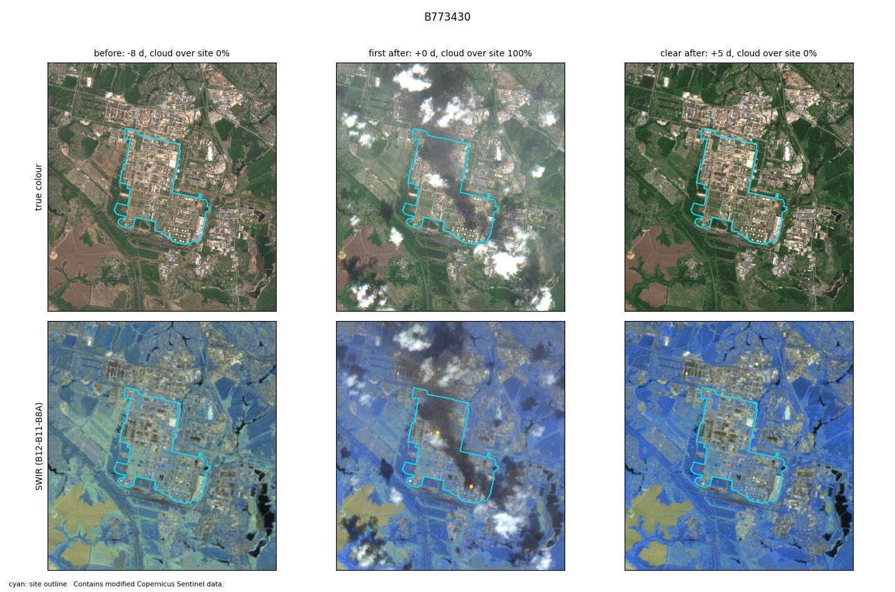
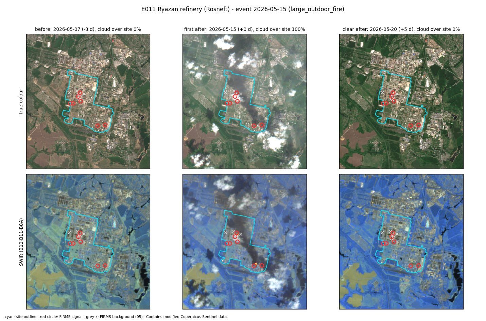

E011 · Large outdoor fire · Test half
Ryazan refinery (Rosneft)
Site level
Corroborated evidence: FIRMS
FIRMS signal from +9.1 h (4 detections in window); image labelled active_fire at a site with flares (weak)
City level
Corroborated
9 satellite passes with heat within 10 km. Expected: 1.08.
Location
- Site point
- 54.56187, 39.74392
- Basis
- OSM way/59165930 "ЗАО "РНПК"" (reviewed 2026-10-25)
- Uncertainty
- about 2.2 km
- OSM outline
- way/59165930 "ЗАО "РНПК""
- City point
- Ryazan’ (GeoNames 500096): 54.6270, 39.7041
- City to site
- 6.2 km
FIRMS heat detections
- Coverage
- VIIRS_SNPP_SP:2026-05-14+5d
VIIRS_NOAA20_SP:2026-05-14+5d
VIIRS_NOAA21_SP:2026-05-14+5d
MODIS_SP:2026-05-14+5d - Gaps
- none
- At the site
- 15 detections in the 5 days around the event. Usual rate: 2.5 per 5 days.
- After the heat filter
- 7 count as fire (2 new, 5 anomalous). 8 usual heat.
- First signal
- +9.1 h from the event
- Strongest signal
- 7 MW fire radiative power
City check
- Verdict
- Corroborated
- Passes with heat
- 9 within 10 km of the city point, inside the time window
- Expected
- 1.08, from the area's own 30-day baseline (p = 0.0)
Sentinel-2
- Status
- Clear images before and after.
- Before
- 7 May 2026. Cloud over site 0%.
- First after
- 15 May 2026 (+0 d). Cloud over site 100%.
- Clear after
- 20 May 2026 (+5 d)
- Burn change (dNBR)
- Site minus surroundings: +0.134. 0% of the site above 0.27.
- Blind label
- active fire, high confidence
Images


Ground truth and sources
Kyiv Independent: 'major fire seen'; fire reported in Wikipedia site history (secondary; cites Reuters/official statements) - add primary source